ASURAT.RmdAttach necessary libraries:
library(ASURAT)
library(SingleCellExperiment)
library(SummarizedExperiment)A goal of ASURAT is to cluster and characterize individual samples (cells) in terms of cell type (or disease), biological function, signaling pathway activity, and so on (see here).
Having a SingleCellExperiment object (e.g., sce), one can use ASURAT by confirming the following requirements:
assays(sce) contains gene expression data with row and column names as variable (gene) and sample (cell), respectively,If sce contains normalized expression data (e.g., assay(sce, "logcounts")), set assay(sce, "centered") by subtracting the data with the mean expression levels across samples (cells).
mat <- as.matrix(assay(sce, "logcounts"))
assay(sce, "centered") <- sweep(mat, 1, apply(mat, 1, mean), FUN = "-")One may use a Seurat function Seurat::as.SingleCellExperiment() for converting Seurat objects into SingleCellExperiment ones.
Now, ready for the next step here.
Load single-cell RNA sequencing (scRNA-seq) data.
sce <- TENxPBMCData::TENxPBMCData(dataset = c("pbmc4k"))
pbmc_counts <- as.matrix(assay(sce, "counts"))
rownames(pbmc_counts) <- rowData(sce)$Symbol_TENx
colnames(pbmc_counts) <- colData(sce)$BarcodeHere, pbmc_counts is a read count table of peripheral blood mononuclear cells (PBMCs).
Below is a head of pbmc_counts:
pbmc_counts[1:5, 1:3]
#> AAACCTGAGAAGGCCT-1 AAACCTGAGACAGACC-1 AAACCTGAGATAGTCA-1
#> RP11-34P13.3 0 0 0
#> FAM138A 0 0 0
#> OR4F5 0 0 0
#> RP11-34P13.7 0 0 0
#> RP11-34P13.8 0 0 0Create SingleCellExperiment objects by inputting gene expression data.
pbmc <- SingleCellExperiment(assays = list(counts = pbmc_counts),
rowData = data.frame(gene = rownames(pbmc_counts)),
colData = data.frame(cell = colnames(pbmc_counts)))Check data sizes.
dim(pbmc)
#> [1] 33694 4340Remove variables (genes) and samples (cells) with low quality, by processing the following three steps:
First of all, add metadata for both variables and samples using ASURAT function add_metadata().
The arguments are
sce: SingleCellExperiment object, andmitochondria_symbol: a string representing for mitochondrial genes.
pbmc <- add_metadata(sce = pbmc, mitochondria_symbol = "^MT-")One can check the results in rowData(sce) and colData(sce) slots.
ASURAT function remove_variables() removes variable (gene) data such that the numbers of non-zero expressing samples (cells) are less than min_nsamples.
pbmc <- remove_variables(sce = pbmc, min_nsamples = 10)Qualities of sample (cell) data are confirmed based on proper visualization of colData(sce). ASURAT function plot_dataframe2D() shows scatter plots of two-dimensional data (see here for details).
dataframe2D <- data.frame(x = colData(pbmc)$nReads, y = colData(pbmc)$nGenes)
plot_dataframe2D(dataframe2D = dataframe2D) +
ggplot2::labs(x = "Number of reads", y = "Number of genes") +
ggplot2::theme_classic(base_size = 20)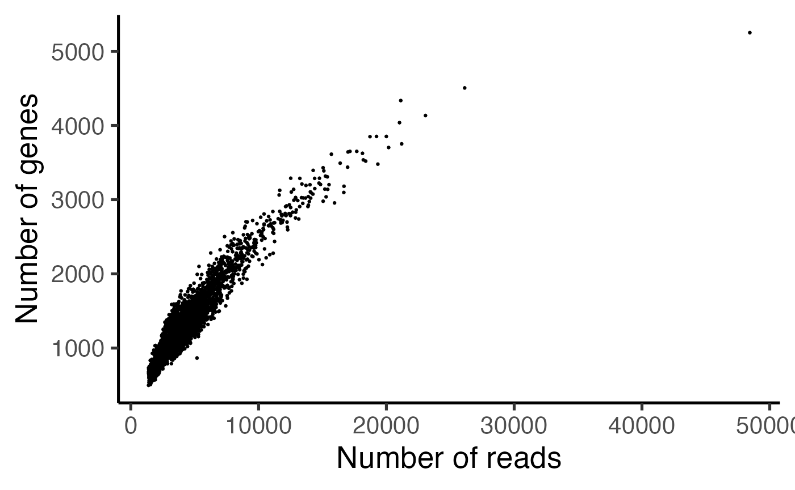
dataframe2D <- data.frame(x = colData(pbmc)$nReads, y = colData(pbmc)$percMT)
plot_dataframe2D(dataframe2D = dataframe2D) +
ggplot2::labs(x = "Number of reads", y = "Perc of MT reads") +
ggplot2::theme_classic(base_size = 20)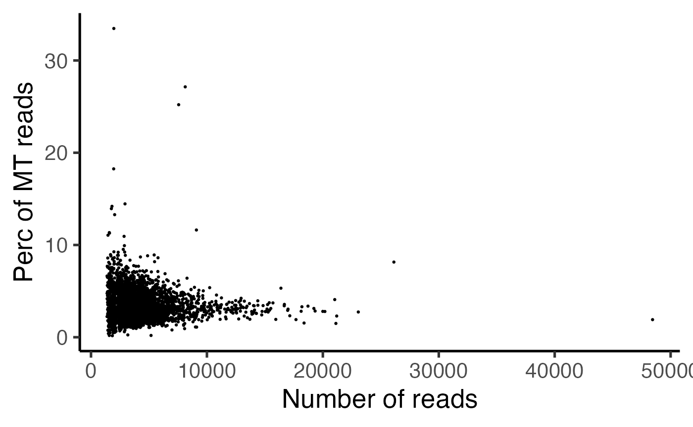
ASURAT function remove_samples() removes sample (cell) data by setting cutoff values for the metadata.
The arguments are
sce: SingleCellExperiment object,min_nReads and max_nReads: minimum and maximum number of reads,min_nGenes and max_nGenes: minimum and maximum number of non-zero expressed genes, andmin_percMT and max_percMT: minimum and maximum percent of reads that map to mitochondrial genes, respectively. If there is no mitochondrial genes, set them as NULL.
pbmc <- remove_samples(sce = pbmc, min_nReads = 2000, max_nReads = 20000,
min_nGenes = 500, max_nGenes = 5000,
min_percMT = 0, max_percMT = 10)Qualities of variable (gene) data are confirmed based on proper visualization of rowData(sce). ASURAT function plot_dataframe2D() shows scatter plots of two-dimensional data (see here for details).
dataframe2D <- data.frame(x = 1:nrow(rowData(pbmc)),
y = sort(rowData(pbmc)$nSamples, decreasing = TRUE))
plot_dataframe2D(dataframe2D = dataframe2D) +
ggplot2::labs(x = "Rank of genes", y = "Mean read counts") +
ggplot2::theme_classic(base_size = 20)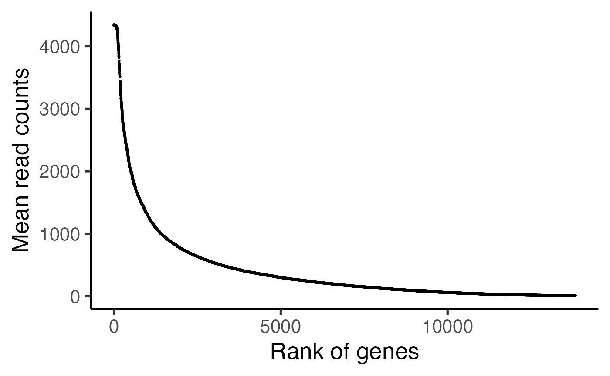
ASURAT function remove_variables_second() removes variable (gene) data such that the mean read counts across samples are less than min_meannReads.
pbmc <- remove_variables_second(sce = pbmc, min_meannReads = 0.05)Normalize data using bayNorm functions (Tang et al., Bioinformatics, 2020) and log transformation with a pseudo count. Then, we center the log-normalized data by subtracting with the mean expression levels across samples (cells). The resulting normalized-and-centered data are used for downstream analyses.
Perform bayNorm() for attenuating technical biases with respect to zero inflation and variation of capture efficiencies between samples (cells).
bayout <- bayNorm::bayNorm(Data = counts(pbmc), mode_version = TRUE)
assay(pbmc, "normalized") <- bayout$Bay_outPerform log-normalization with a pseudo count.
Center row data.
mat <- assay(pbmc, "logcounts")
assay(pbmc, "centered") <- sweep(mat, 1, apply(mat, 1, mean), FUN = "-")Infer cell or disease types, biological functions, and signaling pathway activity at the single-cell level by inputting related databases.
ASURAT transforms centered read count tables to functional feature matrices, termed sign-by-sample matrices (SSMs). Using SSMs, perform unsupervised clustering of samples (cells).
Load databases.
urlpath <- "https://github.com/keita-iida/ASURATDB/blob/main/genes2bioterm/"
load(url(paste0(urlpath, "20220108_human_COMSig.rda?raw=TRUE"))) # CO & MSigDB
load(url(paste0(urlpath, "20201213_human_GO_red.rda?raw=TRUE"))) # GO
load(url(paste0(urlpath, "20201213_human_KEGG.rda?raw=TRUE"))) # KEGGThe reformatted knowledge-based data were available from the following repositories:
Prepare correlation matrices of gene expressions.
Set gene expression data into altExp(sce).
Tips: Take care not to use a slot name “log-normalized” for altExp(sce), which may produce an error when using a Seurat (version 4.0.5) function as.Seurat() in the downstream analysis.
sname <- "logcounts"
altExp(pbmc, sname) <- SummarizedExperiment(list(counts = assay(pbmc, sname)))Add ENTREZ Gene IDs to rowData(sce).
dictionary <- AnnotationDbi::select(org.Hs.eg.db::org.Hs.eg.db,
key = rownames(pbmc),
columns = "ENTREZID", keytype = "SYMBOL")
dictionary <- dictionary[!duplicated(dictionary$SYMBOL), ]
rowData(pbmc)$geneID <- dictionary$ENTREZIDAdd formatted databases to metadata(sce)$sign.
pbmcs <- list(CM = pbmc, GO = pbmc, KG = pbmc)
metadata(pbmcs$CM) <- list(sign = human_COMSig[["cell"]])
metadata(pbmcs$GO) <- list(sign = human_GO[["BP"]])
metadata(pbmcs$KG) <- list(sign = human_KEGG[["pathway"]])ASURAT function remove_signs() redefines functional gene sets for the input database by removing genes, which are not included in rownames(sce), and further removes biological terms including too few or too many genes.
The arguments are
sce: SingleCellExperiment object,min_ngenes: minimal number of genes> 1 (the default value is 2), andmax_ngenes: maximal number of genes> 1 (the default value is 1000).
pbmcs$CM <- remove_signs(sce = pbmcs$CM, min_ngenes = 2, max_ngenes = 1000)
pbmcs$GO <- remove_signs(sce = pbmcs$GO, min_ngenes = 2, max_ngenes = 500)
pbmcs$KG <- remove_signs(sce = pbmcs$KG, min_ngenes = 2, max_ngenes = 1000)The results are stored in metadata(sce)$sign.
ASURAT function cluster_genes() clusters functional gene sets using a correlation graph-based decomposition method, which produces strongly, variably, and weakly correlated gene sets (SCG, VCG, and WCG, respectively).
The arguments are
sce: SingleCellExperiment object,cormat: correlation matrix of gene expressions,th_posi and th_nega: threshold values of positive and negative correlation coefficients, respectively.Tips: Empirically, typical values of th_posi and th_nega are \(0.15 \le {\rm th{\_}posi} \le 0.4\) and \(-0.4 \le {\rm th{\_}nega} \le -0.15\), but one cannot avoid trial and error for setting these values. An exhaustive parameter searching is time-consuming but helpful for obtaining interpretable results.
set.seed(1)
pbmcs$CM <- cluster_genesets(sce = pbmcs$CM, cormat = pbmc_cormat,
th_posi = 0.20, th_nega = -0.20)
set.seed(1)
pbmcs$GO <- cluster_genesets(sce = pbmcs$GO, cormat = pbmc_cormat,
th_posi = 0.20, th_nega = -0.20)
set.seed(1)
pbmcs$KG <- cluster_genesets(sce = pbmcs$KG, cormat = pbmc_cormat,
th_posi = 0.20, th_nega = -0.20)The results are stored in metadata(sce)$sign.
ASURAT function create_signs() creates signs by the following criteria:
min_cnt_strg (the default value is 2) andmin_cnt_vari (the default value is 2),which are independently applied to SCGs and VCGs, respectively.
Tips: Empirically, typical values of min_cnt_strg and min_cnt_vari are \(2 \le {\rm min\_cnt\_strg} = {\rm min\_cnt\_vari} \le 3\), but one cannot avoid trial and error for setting these values. An exhaustive parameter searching is time-consuming but helpful for obtaining interpretable results.
pbmcs$CM <- create_signs(sce = pbmcs$CM, min_cnt_strg = 2, min_cnt_vari = 2)
pbmcs$GO <- create_signs(sce = pbmcs$GO, min_cnt_strg = 3, min_cnt_vari = 3)
pbmcs$KG <- create_signs(sce = pbmcs$KG, min_cnt_strg = 3, min_cnt_vari = 3)The results are stored in metadata(sce)$sign_all, where “CorrType” indicates SCG or VCG, “Corr” means the average correlation coefficients of SCG or VCG, “CorrWeak” means the average correlation coefficients of WCG, “CorrGene” means SCG or VCG, and “WeakCorrGene” means WCG. The orders of gene symbols and ENTREZ IDs, separated by “/”, are consistent.
Tips: If one would like to recreate signs, reset the list of objects by, e.g., (pbmcs <- list(CM = pbmc, GO = pbmc, KG = pbmc)), and go back to remove_signs().
If signs have semantic similarity information, one can use ASURAT function remove_signs_redundant() for removing redundant sings using the semantic similarity matrices.
The arguments are
sce: SingleCellExperiment object,similarity_matrix: a semantic similarity matrix,threshold: a threshold value of semantic similarity, used for regarding biological terms as similar ones, andkeep_rareID: if TRUE, biological terms with the larger ICs are kept.Tips: The optimal value of threshold depends on the ontology structure as well as the method for computing semantic similarity matrix.
pbmcs$GO <- remove_signs_redundant(sce = pbmcs$GO,
similarity_matrix = human_GO$similarity_matrix$BP,
threshold = 0.90, keep_rareID = TRUE)The results are stored in metadata(sce)$sign_SCG, metadata(sce)$sign_VCG, metadata(sce)$sign_all, and if there exist, metadata(sce)$sign_SCG_redundant and metadata(sce)$sign_VCG_redundant.
ASURAT function remove_signs_manually() removes signs by specifying IDs (e.g., GOID:XXX) or descriptions (e.g., metabolic) using grepl(). The arguments are sce and keywords (keywords separated by |).
keywords <- "Covid|COVID|foofoo|hogehoge"
pbmcs$KG <- remove_signs_manually(sce = pbmcs$KG, keywords = keywords)The results are stored in metadata(sce)$sign_SCG, metadata(sce)$sign_VCG, and metadata(sce)$sign_all.
There is another ASURAT function select_signs_manually(), a counter part of remove_signs_manually(), which removes signs that do not include keywords (keywords separated by |).
keywords <- "cell|cyte"
test <- select_signs_manually(sce = pbmcs$CM, keywords = keywords)The results are stored in metadata(sce)$sign_SCG, metadata(sce)$sign_VCG, and metadata(sce)$sign_all.
ASURAT function create_sce_signmatrix() creates a new SingleCellExperiment object new_sce, consisting of the following information:
assayNames(new_sce): counts (SSM whose entries are termed sign scores),names(colData(new_sce)): nReads, nGenes, percMT,names(rowData(new_sce)): ParentSignID, Description, CorrGene, etc.,names(metadata(new_sce)): sign_SCG, sign_VCG, etc.,altExpNames(new_sce): something if there is data in altExp(sce).The arguments are
sce: SingleCellExperiment object,weight_strg: weight parameter for SCG (the default value is 0.5), andweight_vari: weight parameter for VCG (the default is 0.5).
pbmcs$CM <- makeSignMatrix(sce = pbmcs$CM, weight_strg = 0.5, weight_vari = 0.5)
pbmcs$GO <- makeSignMatrix(sce = pbmcs$GO, weight_strg = 0.5, weight_vari = 0.5)
pbmcs$KG <- makeSignMatrix(sce = pbmcs$KG, weight_strg = 0.5, weight_vari = 0.5)Below are head and tail of assay(sce, "counts"):
rbind(head(assay(pbmcs$CM, "counts")[, 1:3], n = 4),
tail(assay(pbmcs$CM, "counts")[, 1:3], n = 4))
#> AAACCTGAGACAGACC-1 AAACCTGAGCGCCTCA-1 AAACCTGAGGCATGGT-1
#> CL:0000097-S 0.14532707 -0.053723407 -0.063695116
#> CL:0000100-S 0.09553473 -0.028719989 0.083311009
#> CL:0000121-S 0.33933952 -0.083850197 -0.138209457
#> CL:0000126-S 0.11126650 -0.115367841 -0.129355630
#> MSigID:278-V -0.01188412 -0.053548307 -0.071345499
#> MSigID:289-V -0.10786674 -0.002297659 -0.088932797
#> MSigID:290-V 0.09279058 -0.060334748 -0.044793026
#> MSigID:295-V -0.01473417 -0.056002030 -0.004625395Perform principal component analysis and t-distributed stochastic neighbor embedding.
set.seed(1)
res <- Rtsne::Rtsne(t(assay(pbmcs$CM, "counts")), dim = 2, pca = TRUE)
reducedDim(pbmcs$CM, "TSNE") <- res[["Y"]]
set.seed(1)
res <- Rtsne::Rtsne(t(assay(pbmcs$GO, "counts")), dim = 2, pca = TRUE)
reducedDim(pbmcs$GO, "TSNE") <- res[["Y"]]
set.seed(1)
res <- Rtsne::Rtsne(t(assay(pbmcs$KG, "counts")), dim = 3, pca = TRUE)
reducedDim(pbmcs$KG, "TSNE") <- res[["Y"]]The results can be visualized by ASURAT functions plot_dataframe2D() or plot_dataframe3D() (see here for details).
dataframe2D <- as.data.frame(reducedDim(pbmcs$CM, "TSNE"))
plot_dataframe2D(dataframe2D = dataframe2D) +
ggplot2::labs(title = "PBMC (CO & MSigDB)", x = "tSNE_1", y = "tSNE_2") +
ggplot2::theme_classic(base_size = 15)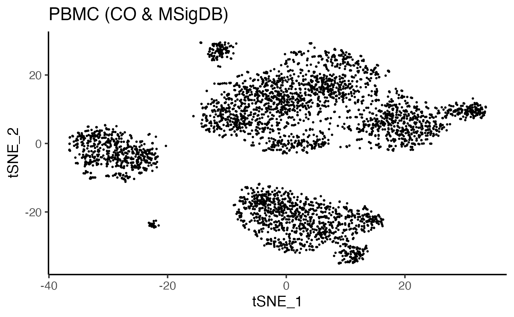
dataframe2D <- as.data.frame(reducedDim(pbmcs$GO, "TSNE"))
plot_dataframe2D(dataframe2D = dataframe2D) +
ggplot2::labs(title = "PBMC (GO)", x = "tSNE_1", y = "tSNE_2") +
ggplot2::theme_classic(base_size = 15)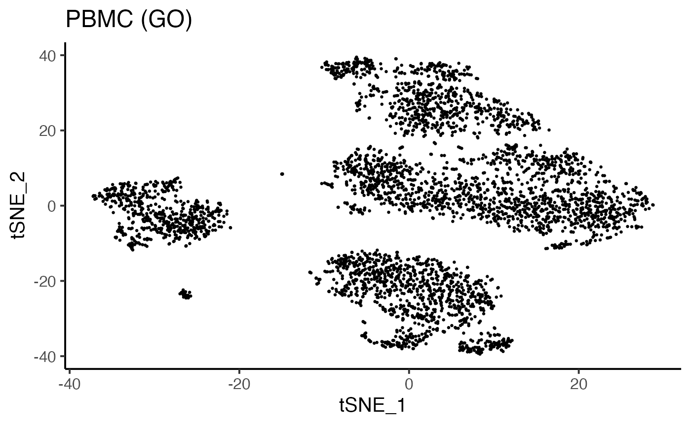
dataframe3D <- as.data.frame(reducedDim(pbmcs$KG, "TSNE")[, seq_len(3)])
plot_dataframe3D(dataframe3D = dataframe3D,
theta = 40, phi = 25, title = "PBMC (KEGG)",
xlabel = "tSNE_1", ylabel = "tSNE_2", zlabel = "tSNE_3")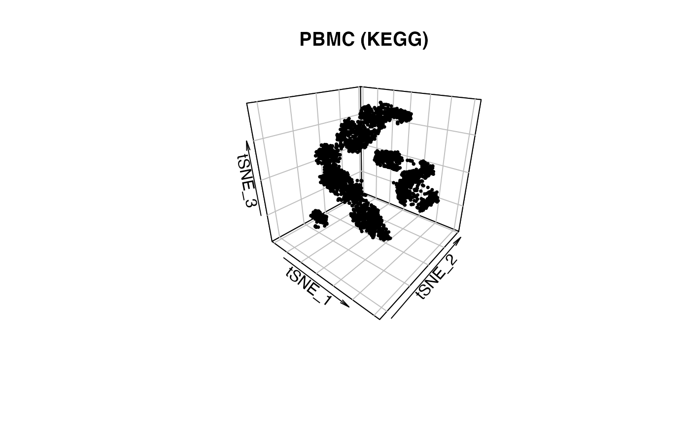
To date (December, 2021), one of the most useful clustering methods in scRNA-seq data analysis is a combination of a community detection algorithm and graph-based unsupervised clustering, developed in Seurat package.
In this tutorial, our strategy is as follows:
rowData() and colData() must have data),ScaleData(), RunPCA(), FindNeighbors(), and FindClusters(),temp,colData(temp)$seurat_clusters into colData(sce)$seurat_clusters.
resolutions <- c(0.15, 0.10, 0.20)
dims <- list(seq_len(30), seq_len(30), seq_len(10))
for(i in seq_len(length(pbmcs))){
pbmc_surt <- Seurat::as.Seurat(pbmcs[[i]], counts = "counts", data = "counts")
pbmc_surt[["SSM"]] <- Seurat::CreateAssayObject(
counts = as.matrix(assay(pbmcs[[i]], "counts")))
Seurat::DefaultAssay(pbmc_surt) <- "SSM"
pbmc_surt <- Seurat::ScaleData(pbmc_surt, features = rownames(pbmc_surt))
pbmc_surt <- Seurat::RunPCA(pbmc_surt, features = rownames(pbmc_surt))
pbmc_surt <- Seurat::FindNeighbors(pbmc_surt, reduction = "pca", dims = dims[[i]])
pbmc_surt <- Seurat::FindClusters(pbmc_surt, resolution = resolutions[i])
pbmc_temp <- Seurat::as.SingleCellExperiment(pbmc_surt)
colData(pbmcs[[i]])$seurat_clusters <- colData(pbmc_temp)$seurat_clusters
}The results can be visualized by ASURAT functions plot_dataframe2D() or plot_dataframe3D() (see here for details).
labels <- colData(pbmcs$CM)$seurat_clusters
dataframe2D <- as.data.frame(reducedDim(pbmcs$CM, "TSNE"))
plot_dataframe2D(dataframe2D = dataframe2D, labels = labels, colors = NULL) +
ggplot2::labs(title = "PBMC (CO & MSigDB)", x = "tSNE_1", y = "tSNE_2", color = "") +
ggplot2::theme_classic(base_size = 15) +
ggplot2::guides(colour = ggplot2::guide_legend(override.aes = list(size = 4)))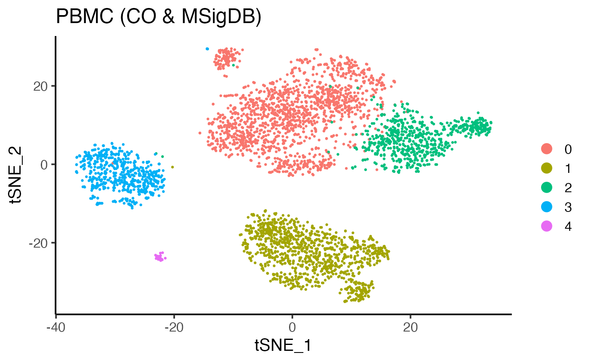
labels <- colData(pbmcs$GO)$seurat_clusters
dataframe2D <- as.data.frame(reducedDim(pbmcs$GO, "TSNE"))
plot_dataframe2D(dataframe2D = dataframe2D, labels = labels, colors = NULL) +
ggplot2::labs(title = "PBMC (GO)", x = "tSNE_1", y = "tSNE_2", color = "") +
ggplot2::theme_classic(base_size = 15)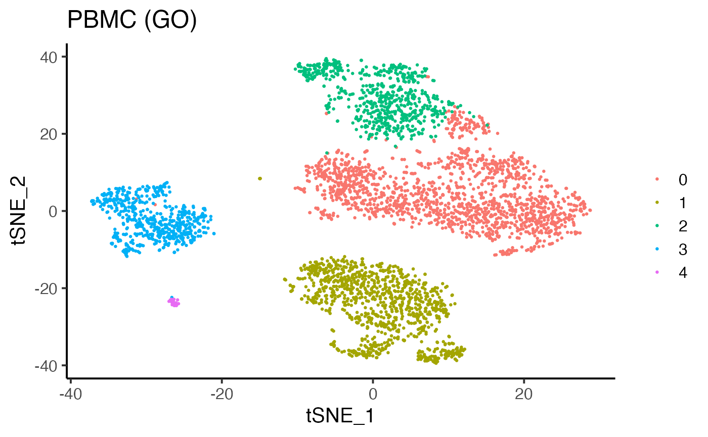
labels <- colData(pbmcs$KG)$seurat_clusters
dataframe3D <- as.data.frame(reducedDim(pbmcs$KG, "TSNE")[, seq_len(3)])
plot_dataframe3D(dataframe3D = dataframe3D, labels = labels, colors = NULL,
theta = 40, phi = 25, title = "PBMC (KEGG)",
xlabel = "tSNE_1", ylabel = "tSNE_2", zlabel = "tSNE_3")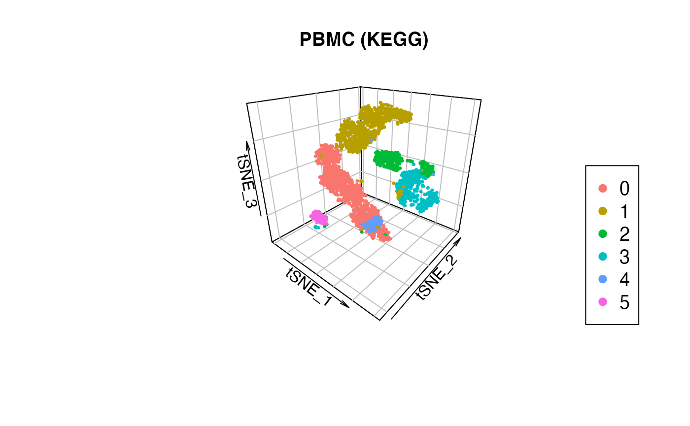
If there is gene expression data in altExp(sce), one can infer cell cycle phases by using Seurat functions in the similar manner as above.
pbmc_surt <- Seurat::as.Seurat(pbmcs$CM, counts = "counts", data = "counts")
pbmc_surt[["GEM"]] <- Seurat::CreateAssayObject(
counts = as.matrix(assay(altExp(pbmcs$CM), "counts")))
Seurat::DefaultAssay(pbmc_surt) <- "GEM"
pbmc_surt <- Seurat::ScaleData(pbmc_surt, features = rownames(pbmc_surt))
pbmc_surt <- Seurat::RunPCA(pbmc_surt, features = rownames(pbmc_surt))
pbmc_surt <- Seurat::CellCycleScoring(pbmc_surt,
s.features = Seurat::cc.genes$s.genes,
g2m.features = Seurat::cc.genes$g2m.genes)
pbmc_temp <- Seurat::as.SingleCellExperiment(pbmc_surt)
colData(pbmcs$CM)$Phase <- colData(pbmc_temp)$PhaseSignificant signs are analogous to differentially expressed genes but bear biological meanings. Note that naïve usages of statistical tests should be avoided because the row vectors of SSMs are centered.
Instead, ASURAT function compute_sepI_all() computes separation indices for each cluster against the others. Briefly, a separation index “sepI”, ranging from -1 to 1, is a nonparametric measure of significance of a given sign score for a given subpopulation. The larger (resp. smaller) sepI is, the more reliable the sign is as a positive (resp. negative) marker for the cluster.
The arguments are
sce: SingleCellExperiment object,labels: a vector of labels of all the samples, andnrand_samples: an integer for the number of samples used for random sampling, which samples at least one sample per cluster.
for(i in seq_len(length(pbmcs))){
set.seed(1)
labels <- colData(pbmcs[[i]])$seurat_clusters
pbmcs[[i]] <- compute_sepI_all(sce = pbmcs[[i]], labels = labels,
nrand_samples = 100)
}The results are stored in metadata(sce)$marker_signs.
When computing separation indices between given clusters, e.g., cluster 1 versus clusters 2 and 3, use an ASURAT function compute_sepI_clusters(). See ?compute_sepI_clusters for details.
ASURAT function plot_violin() shows violin plots showing sign score distributions (see here for details).
vname <- "MSigID:92-S"
pbmc_sub <- pbmcs$CM[rownames(pbmcs$CM) %in% vname, ]
labels <- colData(pbmc_sub)$seurat_clusters
dataframe1D <- as.data.frame(t(assay(pbmc_sub, "counts")))
plot_violin(dataframe1D = dataframe1D, labels = labels, colors = NULL) +
ggplot2::labs(title = paste0(vname, "\n", "B cell (CD79A, CD22, ...)"),
x = "Cluster (CO & MSigDB)", y = "Sign score", fill = "Cluster") +
ggplot2::theme_classic(base_size = 20)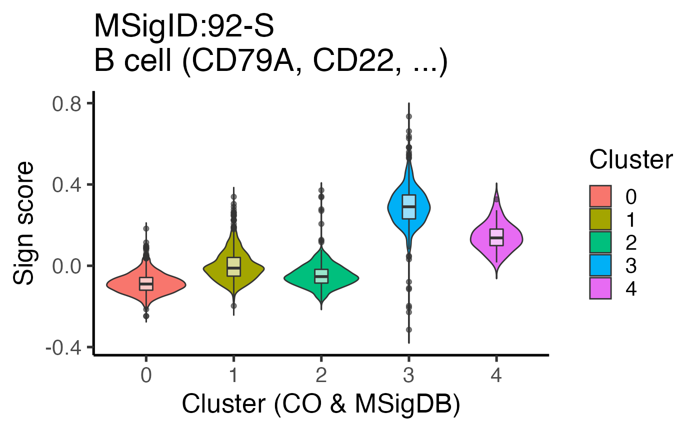
To date (December, 2021), one of the most useful methods of multiple statistical tests in scRNA-seq data analysis is to use a Seurat function FindAllMarkers().
If there is gene expression data in altExp(sce), one can investigate differentially expressed genes by using Seurat functions in the similar manner as described before.
set.seed(1)
pbmc_surt <- Seurat::as.Seurat(pbmcs$CM, counts = "counts", data = "counts")
pbmc_surt[["GEM"]] <- Seurat::CreateAssayObject(
counts = as.matrix(assay(altExp(pbmcs$CM), "counts")))
Seurat::DefaultAssay(pbmc_surt) <- "GEM"
pbmc_surt <- Seurat::SetIdent(pbmc_surt, value = "seurat_clusters")
res <- Seurat::FindAllMarkers(pbmc_surt, only.pos = TRUE,
min.pct = 0.25, logfc.threshold = 0.25)
metadata(pbmcs$CM)$marker_genes$all <- resASURAT function plog_violin() shows violin plots showing gene expression distributions (see here for details).
vname <- "BANK1"
expr_sub <- altExp(pbmcs$CM, "logcounts")
expr_sub <- expr_sub[rownames(expr_sub) == vname]
labels <- colData(pbmcs$CM)$seurat_clusters
dataframe1D <- as.data.frame(t(assay(expr_sub, "counts")))
plot_violin(dataframe1D = dataframe1D, labels = labels, colors = NULL) +
ggplot2::labs(title = vname, x = "Cluster (CO & MSigDB)",
y = "Normalized expression", fill = "Cluster") +
ggplot2::theme_classic(base_size = 20)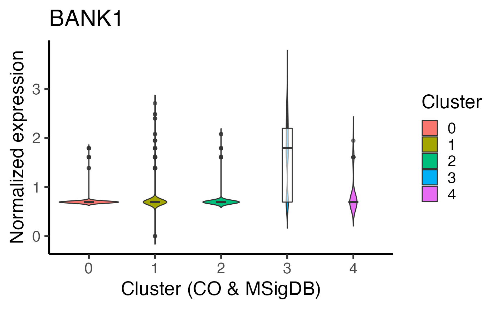
Simultaneously analyze multiple sign-by-sample matrices, which helps us characterize individual samples (cells) from multiple biological aspects.
ASURAT function plot_multiheatmaps() shows heatmaps (ComplexHeatmap object) of sign scores and gene expression levels (if there are), where rows and columns stand for sign (or gene) and sample (cell), respectively (see here for details).
First, manually curate signs by setting keywords, followed by selecting top significant signs and genes for the clustering results with respect to separation index and p-value, respectively.
# Significant signs
marker_signs <- list()
keywords <- "GLIA|glia"
for(i in seq_len(length(pbmcs))){
marker_signs[[i]] <- metadata(pbmcs[[i]])$marker_signs$all
marker_signs[[i]] <- marker_signs[[i]][!grepl(keywords, marker_signs[[i]]$Description), ]
marker_signs[[i]] <- dplyr::group_by(marker_signs[[i]], Ident_1)
marker_signs[[i]] <- dplyr::slice_max(marker_signs[[i]], sepI, n = 1)
marker_signs[[i]] <- dplyr::slice_min(marker_signs[[i]], SignID, n = 1)
}
# Significant genes
marker_genes_CM <- metadata(pbmcs$CM)$marker_genes$all
marker_genes_CM <- dplyr::group_by(marker_genes_CM, cluster)
marker_genes_CM <- dplyr::slice_min(marker_genes_CM, p_val_adj, n = 5)
marker_genes_CM <- dplyr::slice_max(marker_genes_CM, avg_log2FC, n = 1)Then, prepare arguments.
# ssm_list
pbmcs_sub <- list() ; ssm_list <- list()
for(i in seq_len(length(pbmcs))){
pbmcs_sub[[i]] <- pbmcs[[i]][rownames(pbmcs[[i]]) %in% marker_signs[[i]]$SignID, ]
ssm_list[[i]] <- assay(pbmcs_sub[[i]], "counts")
}
names(ssm_list) <- c("SSM_COMSig", "SSM_GO", "SSM_KEGG")
# gem_list
expr_sub <- altExp(pbmcs$CM, "logcounts")
expr_sub <- expr_sub[rownames(expr_sub) %in% marker_genes_CM$gene]
gem_list <- list(GeneExpr = assay(expr_sub, "counts"))
# ssmlabel_list
labels <- list() ; ssmlabel_list <- list()
for(i in seq_len(length(pbmcs))){
labels[[i]] <- data.frame(label = colData(pbmcs_sub[[i]])$seurat_clusters)
labels[[i]]$color <- NA
ssmlabel_list[[i]] <- labels[[i]]
}
names(ssmlabel_list) <- c("Label_COMSig", "Label_GO", "Label_KEGG")
# gemlabel_list
label_CC <- data.frame(label = colData(pbmcs$CM)$Phase, color = NA)
gemlabel_list <- list(CellCycle = label_CC)Finally, plot heatmaps for the selected signs and genes.
set.seed(1)
plot_multiheatmaps(ssm_list = ssm_list, gem_list = gem_list,
ssmlabel_list = ssmlabel_list, gemlabel_list = gemlabel_list,
nSamples = 100, show_row_names = TRUE, title = "PBMC")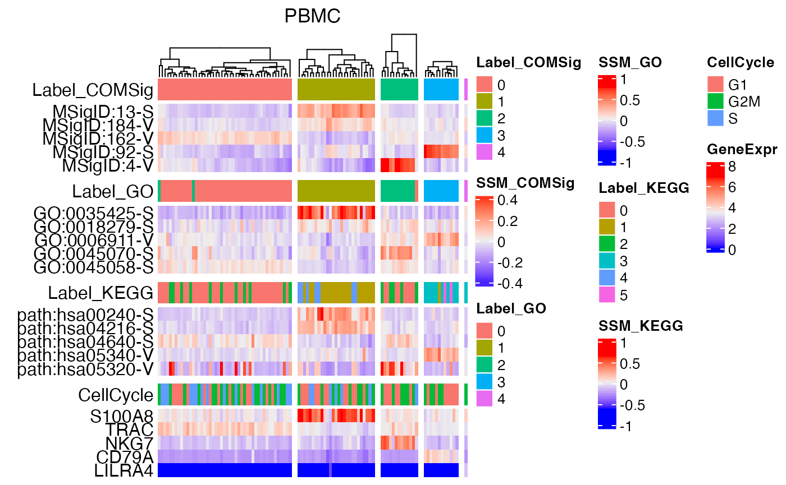
In this section, ASURAT functions for visualization are introduced.
ASURAT function plot_violin() shows violin plots (ggplot objects) showing sign score or gene expression distributions.
The arguments are
dataframe1D: a dataframe with one column,labels: a vector of labels of all the samples, corresponding to colors,colors: a vector of colors of all the samples, corresponding to labels; if colors = NULL, default colors are used.ASURAT function plot_dataframe2D() visualizes two-dimensional data with or without labels and colors.
The arguments are
dataframe2D: a dataframe with two columns,labels: a vector of labels of all the samples, corresponding to colors,colors: a vector of colors of all the samples, corresponding to labels; if colors = NULL, default colors are used.ASURAT function plot_dataframe3D() visualizes three-dimensional data with or without labels and colors.
The arguments are
dataframe3D: a dataframe with three columns,labels: a vector of labels of all the samples, corresponding to colors,colors: a vector of colors of all the samples, corresponding to labels; if colors = NULL, default colors are used,theta and phi: angles in degree measure,title, title_size, xlabel, ylabel, and zlabel.ASURAT function plot_heatmaps() shows heatmaps (ComplexHeatmap objects) of sign scores and gene expression levels (if there are), where rows and columns stand for sign (or gene) and sample (cell), respectively. Here, the column dendrogram is computed by the first component of ssm_list based on ComplexHeatmap functions.
The arguments are
ssm_list: list of sign-by-sample matrices,gem_list: list of gene-by-sample matrices,ssmlabel_list: NULL or a list of dataframes of sample (cell) labels and colors; the length of the list must be as same as that of ssm_list, and the order of labels in each list must be as same as those in ssm_list,gemlabel_list: NULL or a list of dataframes of sample (cell) annotations and colors; the length of the list must be as same as that of gem_list, and the order of labels in each list must be as same as those in gem_list,nSamples: number of samples (cells) used for random sampling,show_row_names: TRUE or FALSE: if TRUE, row names are shown unless the maximum number of rows exceeds a certain value,title: Title.
sessionInfo()
#> R version 4.0.4 (2021-02-15)
#> Platform: x86_64-apple-darwin17.0 (64-bit)
#> Running under: macOS Big Sur 10.16
#>
#> Matrix products: default
#> BLAS: /Library/Frameworks/R.framework/Versions/4.0/Resources/lib/libRblas.dylib
#> LAPACK: /Library/Frameworks/R.framework/Versions/4.0/Resources/lib/libRlapack.dylib
#>
#> locale:
#> [1] en_US.UTF-8/en_US.UTF-8/en_US.UTF-8/C/en_US.UTF-8/en_US.UTF-8
#>
#> attached base packages:
#> [1] parallel stats4 stats graphics grDevices utils datasets
#> [8] methods base
#>
#> other attached packages:
#> [1] TENxPBMCData_1.8.0 HDF5Array_1.18.1
#> [3] rhdf5_2.34.0 DelayedArray_0.16.3
#> [5] Matrix_1.3-4 SingleCellExperiment_1.12.0
#> [7] SummarizedExperiment_1.20.0 Biobase_2.50.0
#> [9] GenomicRanges_1.42.0 GenomeInfoDb_1.26.7
#> [11] IRanges_2.24.1 S4Vectors_0.28.1
#> [13] BiocGenerics_0.36.1 MatrixGenerics_1.2.1
#> [15] matrixStats_0.61.0 ASURAT_0.99.1
#>
#> loaded via a namespace (and not attached):
#> [1] utf8_1.2.2 reticulate_1.22
#> [3] tidyselect_1.1.1 RSQLite_2.2.8
#> [5] AnnotationDbi_1.52.0 htmlwidgets_1.5.4
#> [7] grid_4.0.4 BiocParallel_1.24.1
#> [9] Rtsne_0.15 munsell_0.5.0
#> [11] codetools_0.2-18 ragg_1.1.3
#> [13] ica_1.0-2 future_1.23.0
#> [15] miniUI_0.1.1.1 misc3d_0.9-1
#> [17] withr_2.4.3 colorspace_2.0-2
#> [19] highr_0.9 knitr_1.36
#> [21] Seurat_4.0.5 ROCR_1.0-11
#> [23] tensor_1.5 listenv_0.8.0
#> [25] labeling_0.4.2 GenomeInfoDbData_1.2.4
#> [27] polyclip_1.10-0 bit64_4.0.5
#> [29] farver_2.1.0 rprojroot_2.0.2
#> [31] parallelly_1.28.1 vctrs_0.3.8
#> [33] generics_0.1.1 xfun_0.27
#> [35] BiocFileCache_1.14.0 R6_2.5.1
#> [37] clue_0.3-60 locfit_1.5-9.4
#> [39] bitops_1.0-7 rhdf5filters_1.2.1
#> [41] spatstat.utils_2.2-0 cachem_1.0.6
#> [43] assertthat_0.2.1 promises_1.2.0.1
#> [45] scales_1.1.1 gtable_0.3.0
#> [47] Cairo_1.5-12.2 globals_0.14.0
#> [49] goftest_1.2-3 rlang_0.4.12
#> [51] systemfonts_1.0.2 GlobalOptions_0.1.2
#> [53] splines_4.0.4 lazyeval_0.2.2
#> [55] spatstat.geom_2.3-0 BiocManager_1.30.16
#> [57] yaml_2.2.1 reshape2_1.4.4
#> [59] abind_1.4-5 httpuv_1.6.3
#> [61] tools_4.0.4 tcltk_4.0.4
#> [63] ggplot2_3.3.5 ellipsis_0.3.2
#> [65] spatstat.core_2.3-1 jquerylib_0.1.4
#> [67] RColorBrewer_1.1-2 ggridges_0.5.3
#> [69] Rcpp_1.0.7 plyr_1.8.6
#> [71] zlibbioc_1.36.0 purrr_0.3.4
#> [73] RCurl_1.98-1.5 rpart_4.1-15
#> [75] deldir_1.0-6 bayNorm_1.8.0
#> [77] pbapply_1.5-0 GetoptLong_1.0.5
#> [79] cowplot_1.1.1 zoo_1.8-9
#> [81] SeuratObject_4.0.2 ggrepel_0.9.1
#> [83] cluster_2.1.2 fs_1.5.0
#> [85] magrittr_2.0.1 data.table_1.14.2
#> [87] scattermore_0.7 circlize_0.4.13
#> [89] lmtest_0.9-38 RANN_2.6.1
#> [91] fitdistrplus_1.1-6 patchwork_1.1.1
#> [93] mime_0.12 evaluate_0.14
#> [95] xtable_1.8-4 gridExtra_2.3
#> [97] shape_1.4.6 compiler_4.0.4
#> [99] tibble_3.1.5 KernSmooth_2.23-20
#> [101] crayon_1.4.2 htmltools_0.5.2
#> [103] mgcv_1.8-38 later_1.3.0
#> [105] snow_0.4-4 tidyr_1.1.4
#> [107] DBI_1.1.1 ExperimentHub_1.16.1
#> [109] dbplyr_2.1.1 ComplexHeatmap_2.6.2
#> [111] MASS_7.3-54 rappdirs_0.3.3
#> [113] igraph_1.2.7 pkgconfig_2.0.3
#> [115] pkgdown_2.0.2 plotly_4.10.0
#> [117] spatstat.sparse_2.0-0 foreach_1.5.1
#> [119] bslib_0.3.1 XVector_0.30.0
#> [121] stringr_1.4.0 digest_0.6.28
#> [123] sctransform_0.3.2 RcppAnnoy_0.0.19
#> [125] spatstat.data_2.1-0 rmarkdown_2.11
#> [127] leiden_0.3.9 uwot_0.1.10
#> [129] curl_4.3.2 shiny_1.7.1
#> [131] rjson_0.2.20 nlme_3.1-153
#> [133] lifecycle_1.0.1 jsonlite_1.7.2
#> [135] Rhdf5lib_1.12.1 limma_3.46.0
#> [137] desc_1.4.0 viridisLite_0.4.0
#> [139] fansi_0.5.0 pillar_1.6.4
#> [141] lattice_0.20-45 fastmap_1.1.0
#> [143] httr_1.4.2 survival_3.2-13
#> [145] interactiveDisplayBase_1.28.0 glue_1.4.2
#> [147] png_0.1-7 iterators_1.0.13
#> [149] plot3D_1.4 BiocVersion_3.12.0
#> [151] bit_4.0.4 stringi_1.7.5
#> [153] sass_0.4.0 blob_1.2.2
#> [155] textshaping_0.3.6 org.Hs.eg.db_3.12.0
#> [157] AnnotationHub_2.22.1 doSNOW_1.0.19
#> [159] memoise_2.0.0 dplyr_1.0.7
#> [161] irlba_2.3.3 future.apply_1.8.1